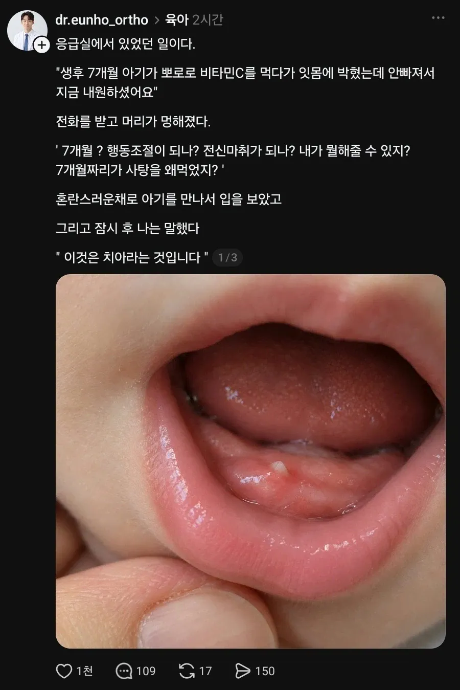

아아...

아아...
이거 찾고 있었다 ㅋㅋㅋㅋㅋㅋㅋㅋ
스고이! 스바라시!
에엣..! 굉장해!
저 녀석… 입으로 뭔가를 자르고 있어…!

저만한 아기용 이앓이 사탕이 있는데 그걸먹인다고? 기도막히게할하고 환장했네
요즘 영양제니 뭐니 해서 쓸데없이 챙겨가지고 과보호에 너무 어린애한테까지 저러는 사람 꽤 있는데 너무 극성임. 이유식이라도 잘 먹으면 다행인데
그리고 양치도 해야합니다
진짜 사탕 먹였나
커여워
그렇게 왜소한 것이 치아 일 리 없다
간질간질할텐데
잉 귀여워
사탕줬는데 이앓이 하니 애는 울지 근대 초보엄마는 이앓인지 모르는 상황에
목이 막혔나 보니 헉??? 뭐가 박혀있네!!
오해할만하지 특히 첫째는
예전에 강아지 젖꼭지 보고 암걸렸다고 찾아온분 생각나네 보통 외부기생충인줄 아는경우는 흔한데 대체 뭘 보고 암이라고 생각하셨을까
우리 마눌은 애가울면, 애가 안울면, 애가 뭔가 특이하다고 생각할때마다 동네 단골 약국을 찾아가서 아이가 이상하다고 하소연했다.
낯선도시에서 그나마 친한? 의학전문가라고 여겨서였겠지.
약사님이 그러셨다더라 첫출산, 첫육아의 공포?이기도했고 산후우울증의 약한버전이기도 했다고.
아아..이것은 "치아"라는 것이다
언제부터 사탕이라고 착각하고있던거지?
7개월 애기한테 사탕을 먹인다고..?
유치가 죽순이냐 하루아침에 솟아 올랐나
준게아니라 주워먹었나 생각한거겠지
아기가 잇못에 룬박은거네
저거때문에 내원할 엄마가 뽀로로 비타민을 7개월짜리에게 주진 않음. 어쩌다가 애가 주워 먹었겠지
진짜 주는 엄마였으면 저런걸로 병원 안델꼬감
귀찮거든
아 그래요? 아무튼 빨리 빼주세요
아아─, 이것은 『치아』라는 것이다.